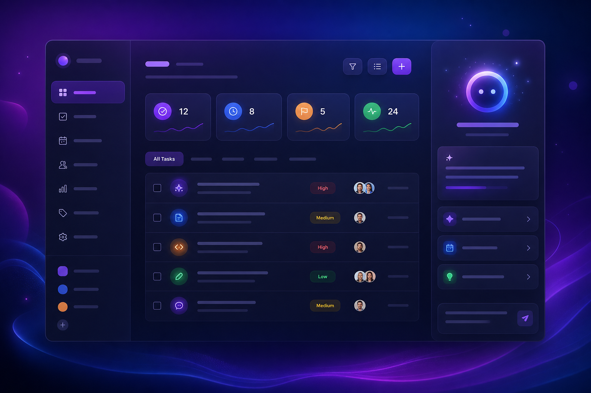
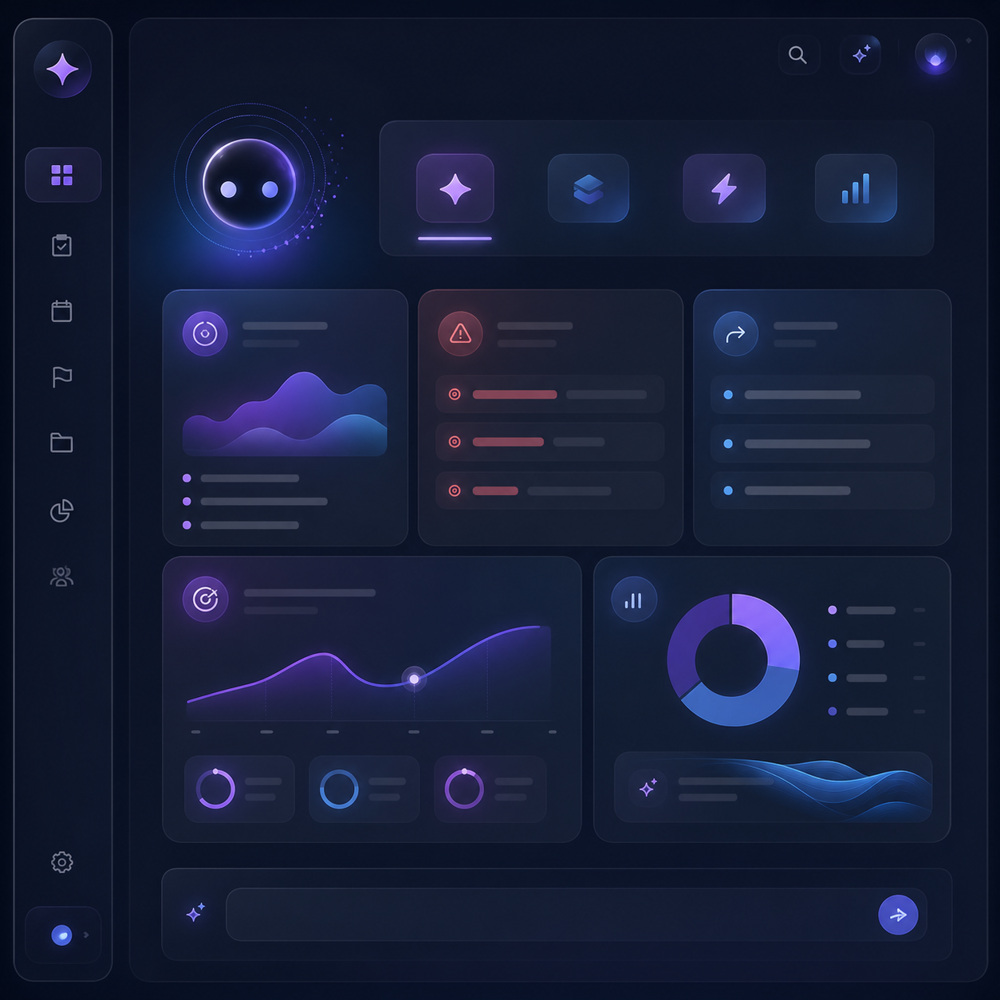
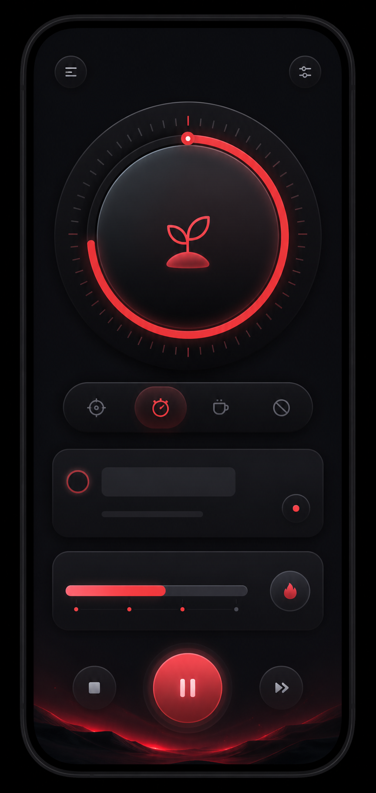
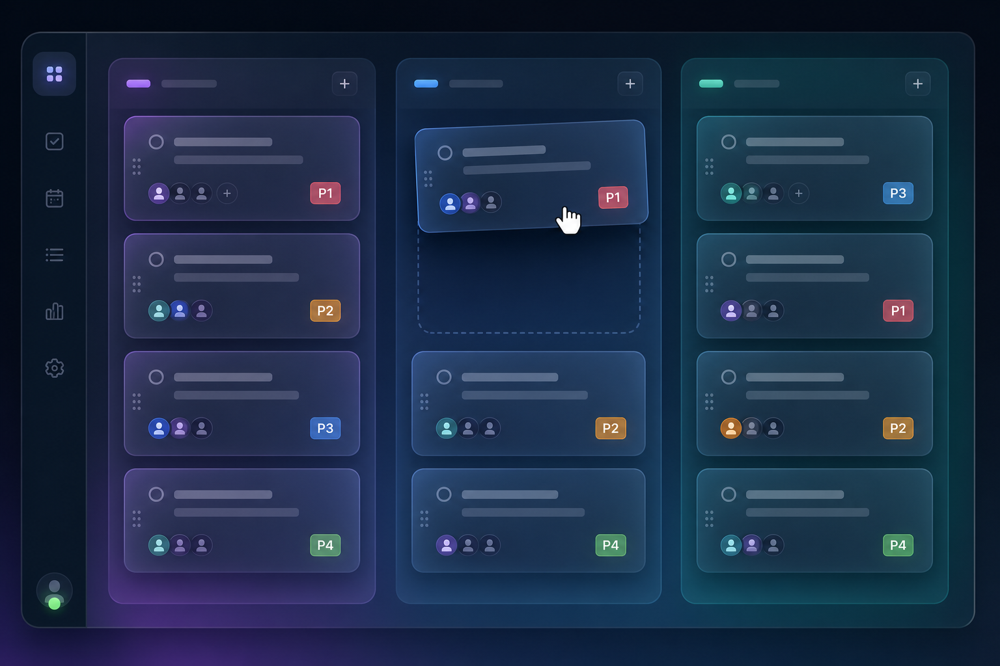
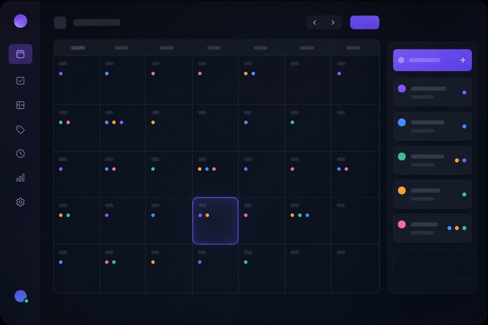
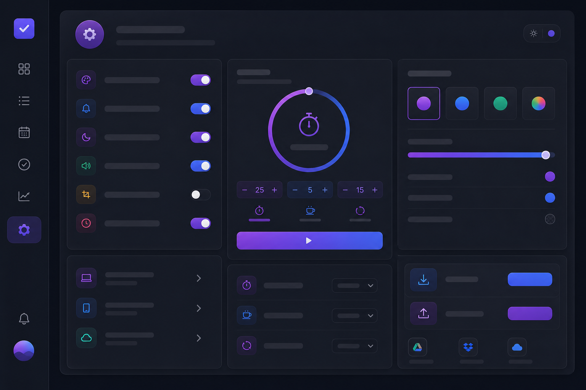

TaskFlow AI 不只是待办清单，它是一个懂你的 AI 工作助手。智能分析、优先推荐、效率洞察，让每一分钟都有价值。

已被开发者信赖使用
不只是记录任务，更是理解任务。让每一个功能都为你节省时间。
实时分析任务数据，提供每日简报、过期预警、下一步建议、效率洞察。打开就知道今天该做什么。
专注计时与任务管理合二为一。每个任务绑定番茄钟，专注时长自动记录，进度自动更新。
列表视图高效简洁，看板视图可视化流程，日历视图直观规划。一键切换，随心选择。
P1 紧急到 P4 低优，颜色直观区分。AI 根据优先级推荐最该先做的任务。
创建项目并自定义颜色，支持分组、收藏、项目级番茄钟开关。让复杂工作井井有条。
JWT 认证、密码加密、API 限流、数据隔离。你的数据安全有保障。
它不只是提醒，它会思考。真正理解你的任务，给出有价值的建议。
早上打开 App 就知道今天该做什么，待办数量、过期任务、完成率一目了然。
自动识别拖延的任务并按优先级排序，提醒你尽快处理。
基于优先级和上下文，推荐你现在最该做的事，减少决策疲劳。
完成率分析、番茄钟统计、改进建议，帮你持续优化工作习惯。

专注和任务不再分离，一站式完成工作规划与执行。

25分钟专注可自定义，短休息5分钟，长休息15分钟。
番茄钟与具体任务关联，专注时长自动记录到任务。
每次番茄钟的时长和完成状态都有记录，可追溯。
可设置自动开始休息/专注，无需手动操作。
选择最适合你的方式，让任务管理更顺手。

拖拽卡片切换状态，可视化项目进度，适合流程管理。

月历展示任务分布，直观查看每日安排，适合时间规划。

暗色/亮色主题、番茄钟参数、通知设置，完全按你习惯。
采用最新的前端技术，保证性能与开发效率。
最新UI框架
类型安全
原子化样式
轻量状态
极速构建
后端框架
零配置数据库
安全认证
核心功能模块
数据表设计
API接口
开源免费
开源免费，立即体验 AI 驱动的任务管理。让你的每一天都更有方向。